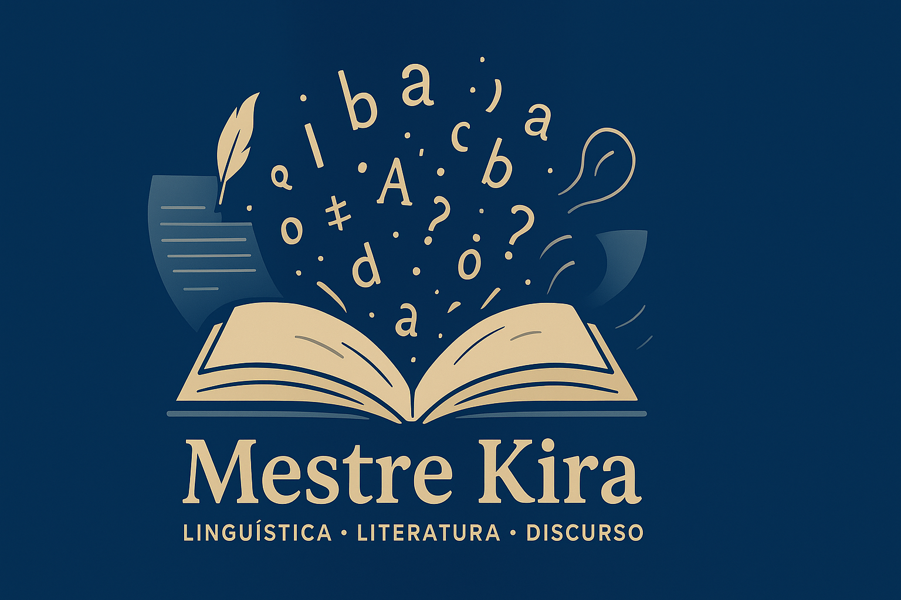

Possíveis temas para redação do PAES UEMA 2027
Neste guia completo, você encontrará uma análise das tendências da banca, além de temas prováveis com explicações detalhadas e estratégias para construir uma redação nota alta.
O
Mestre Kira
O significado do nome Mestre Kira
K — Kaizen (改善): princípio japonês da melhoria contínua, que representa a evolução constante por meio do estudo.
I — Invictus: palavra de origem latina que simboliza perseverança, coragem e determinação para superar desafios.
R — Ratio: termo latino que significa razão, lógica e pensamento crítico, fundamentos indispensáveis para a construção do conhecimento.
A — Areté (ἀρετή): conceito da filosofia grega que representa a excelência humana alcançada pelo desenvolvimento intelectual, moral e pessoal.
Assim, Mestre Kira representa uma filosofia de ensino baseada na
melhoria contínua,
na perseverança,
no pensamento racional e na
busca permanente pela excelência.
é um portal educacional dedicado à produção e divulgação de conteúdos sobre
Língua Portuguesa,
Redação,
Linguística,
Literatura e
Análise do Discurso.
O projeto foi desenvolvido com objetivo formativo e pedagógico, oferecendo conteúdos explicativos, materiais de apoio e reflexões voltadas para estudantes, professores, pesquisadores, vestibulandos, concursandos e leitores interessados em compreender de forma mais profunda o funcionamento da linguagem, dos textos e da produção de sentidos.

Os conteúdos apresentados possuem fundamentação teórica e abordagem didática, buscando tornar os estudos linguísticos e literários mais acessíveis, claros e significativos.
Além dos conteúdos de Linguística e Literatura, o Mestre Kira também disponibiliza materiais voltados à produção textual, interpretação de textos, argumentação, desenvolvimento de repertório sociocultural e preparação para redações do ENEM e Paes UEMA.
Os conteúdos são desenvolvidos com foco pedagógico e procuram auxiliar estudantes na construção de uma escrita crítica, organizada e adequada às exigências dos processos seletivos contemporâneos.
O projeto também conta com a Plataforma de Redação Mestre Kira, ambiente digital desenvolvido para auxiliar escolas, professores e estudantes no processo de produção, correção, acompanhamento e gerenciamento de redações.
A plataforma oferece recursos para criação de propostas de redação, correção por competências, acompanhamento de desempenho e organização pedagógica voltada à preparação para ENEM e vestibulares.
Conheça a Plataforma de Redação Mestre Kira
Cada publicação é desenvolvida como ferramenta de estudo, aprofundamento teórico e reflexão crítica, articulando linguagem, literatura e produção de sentidos.
O Mestre Kira configura-se como espaço de aprendizagem contínua, organizado de maneira progressiva e interdisciplinar, permitindo que os leitores acompanhem o desenvolvimento dos temas de forma gradual e consistente.
O projeto busca valorizar a leitura crítica, o estudo da linguagem e a construção do conhecimento, sempre com compromisso pedagógico, clareza e rigor conceitual.
O Mestre Kira foi criado por Leildo Gonçalves, professor de Língua Portuguesa, pesquisador e desenvolvedor de projetos educacionais voltados à linguagem, redação e tecnologia aplicada à educação.
Formado em Licenciatura em Letras — Língua Portuguesa e Literaturas de Língua Portuguesa pela Universidade Estadual do Maranhão (UEMA), atua no desenvolvimento de conteúdos educacionais e de soluções digitais voltadas ao ensino e à aprendizagem.
Conheça mais sobre a trajetória acadêmica e profissional do criador do Mestre Kira